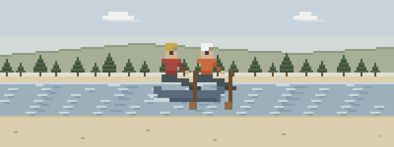

After the swim
- The long swim. She came out at the top and swam the whole rapid. On the bank she’s coughing, shivering, and insisting she’s fine — the cold and the swallowed river both get a vote.
- The shoulder. He braced wrong and now the arm won’t come back to the paddle. You’ll sling it and support it — putting it back in is a clinician’s job, and this course won’t pretend otherwise.
- After the entrapment. His foot caught and he was under longer than anyone will say out loud. He’s out and breathing now — the next ten minutes are yours, and they matter.
Read these between river days
Ordered the way the river hands them to you:
- Water & Lightning — breaths first for the swimmer who went under — the entrapment aftermath
- Cold Injuries — every swim is a cold-water event, even in July
- Musculoskeletal Injuries — sling and support the shoulder — reduction isn’t taught here, and shouldn’t be
- Provider Safety — the river is still running — one swimmer must not become two
- Evacuation — river-left or river-right is the trip’s biggest decision
Then pressure-test it
Interactive scenarios — one decision at a time, tempting mistakes included, debrief at the end:
- The Burrito — the long swimmer, wrapped right
- Wiggle, Feel, Warm — splint, check, re-check — the doctrine your sling hangs on
- Don’t Sit Him Up — neck pain in a bad spot, weather coming
The certification question, honestly. “Wilderness First Aid” isn’t a regulated credential. No government body defines what a WFA card means — it means whatever the company that printed it says it means. What counts in front of a patient is whether you can do the work. This course teaches the work, free, and issues a record of completion — not a certificate, and we won’t pretend otherwise. Swiftwater rescue courses are the real water-rescue credential — reading current, rope work, live-bait rescues — and nothing here touches any of it. This course starts where theirs hands off: the swimmer is on shore, and now it’s medicine. If nobody requires you to hold a card, what you need are the skills, not the laminate.
Eddy-line questions
The swimmer’s out and coughing — is that an emergency?
It’s an evacuation, and the river doesn’t get a vote on that. A cough that persists after going under means water reached the lungs, and that injury can worsen over the next several hours — the rule is any symptoms after submersion, evacuate for evaluation, not “wait and see” at camp. No symptoms still earns hours of close watching and dry layers; unresponsive in the water means breaths first, before compressions.
Should you put a dislocated shoulder back in on the river?
No — and this course won’t teach you to, because that’s a clinician’s job with imaging and anesthesia behind it. What you can do well on a gravel bar: sling it, support it in the position of comfort, check the hand before and after, and change the trip plan. Lesson 6 covers the sling.
Does a wetsuit mean I don’t need to worry about cold?
It means the schedule is longer, not cancelled. Every swim is a cold-water event, even in July, even in neoprene — and a long swim followed by wind on a wet boater is how hypothermia arrives mid-afternoon. Watch the shivering: if it stops without rewarming, that’s worse, not better.
What this is
Fifteen lessons, a 40-question knowledge check, sixteen practice scenarios, a printable field reference card, and a kit checklist. Free, no account, nothing recorded about you, source on GitHub. It teaches decision-making, not hands-on skill — practice the hands-on parts on a real, padded, complaining friend.
Other people who read water: sea kayakers, SUP & open-water paddlers · canoe trippers & Boundary Waters explorers · fly fishing & backcountry anglers